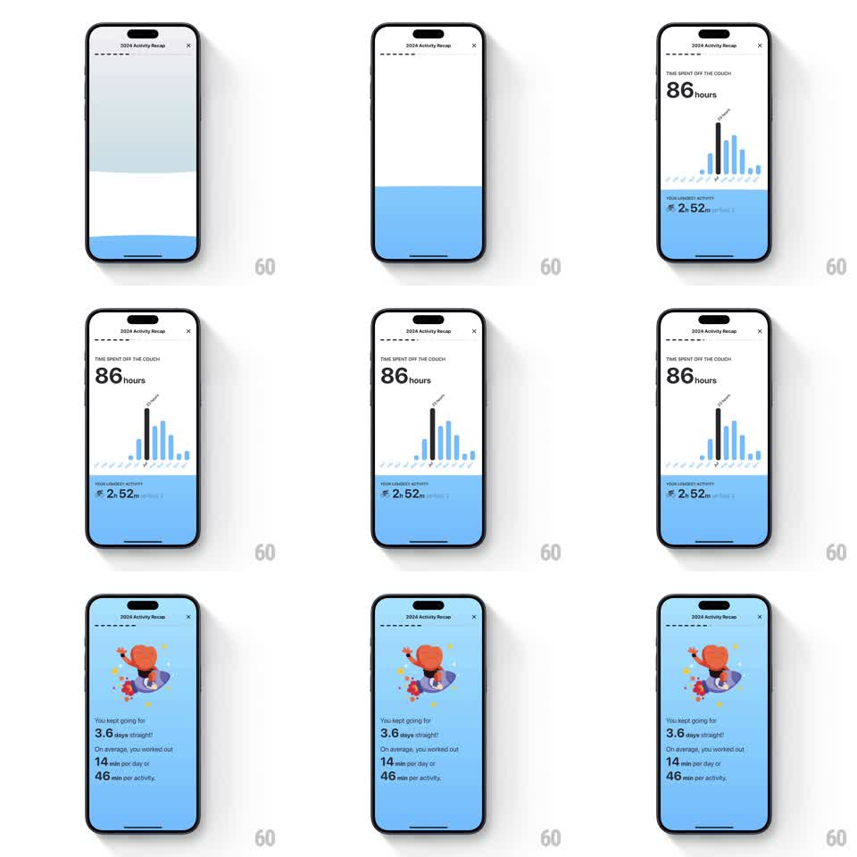

Media
Frame-by-frame

Rebuild this animation 1:1: Gentler Streak's time recap - a bar chart of days grows with the longest day flagged, then the mascot flies in over a full-blue card with the streak stats.

Rebuild this animation 1:1: Gentler Streak's time recap - a bar chart of days grows with the longest day flagged, then the mascot flies in over a full-blue card with the streak stats. ## Integration Integration: stack-agnostic spec - springs given as stiffness/damping, timed motions as duration + curve; map every value to your framework and animation library of choice. ## Scene White over blue banded screen: "TIME SPENT OFF THE COUCH" kicker, a huge "86 hours", a bar chart of daily durations with one tall dark bar flagged, and a blue lower band "YOUR LONGEST ACTIVITY - 2h 52m on Nov 2". Second card: full-blue screen, the orange mascot riding a small planet with sparkles, and copy "You kept going for 3.6 days straight! On average, you worked out 14 min per day or 46 min per activity." ## Motion spec Pattern: growing chart then mascot card, ~2.5s. - Bands slide in (pale top, blue bottom, 300ms each), kicker and "86 hours" fading up (300ms). - The chart bars grow from the baseline left to right (each 200ms, ease-out, 50ms stagger), the longest bar rising last and tallest with its flag popping at the tip (scale 0 to 1, spring stiffness 420 damping 16). - The blue band's stat line fades in as the tallest bar lands (250ms). - Transition: the blue band floods upward to fill the screen (350ms, ease-in-out). - The mascot flies in from the lower left on a small arc (spring stiffness 300 damping 16), sparkles popping around it (scale 0 to 1, 100ms stagger), then the copy lines fade and rise (250ms each, 120ms stagger). ## Calibration - One bar is dramatically taller and darker than the rest - the outlier is the story. - The mascot's arc enters low and settles center-top; a straight rise reads as an elevator. ## Reduced motion Scenes crossfade; elements appear assembled. ## Don't miss - The flag sits exactly on the tallest bar's tip. - The copy mixes three stats (3.6 days, 14 min, 46 min) - keep the line breaks and bold numbers.